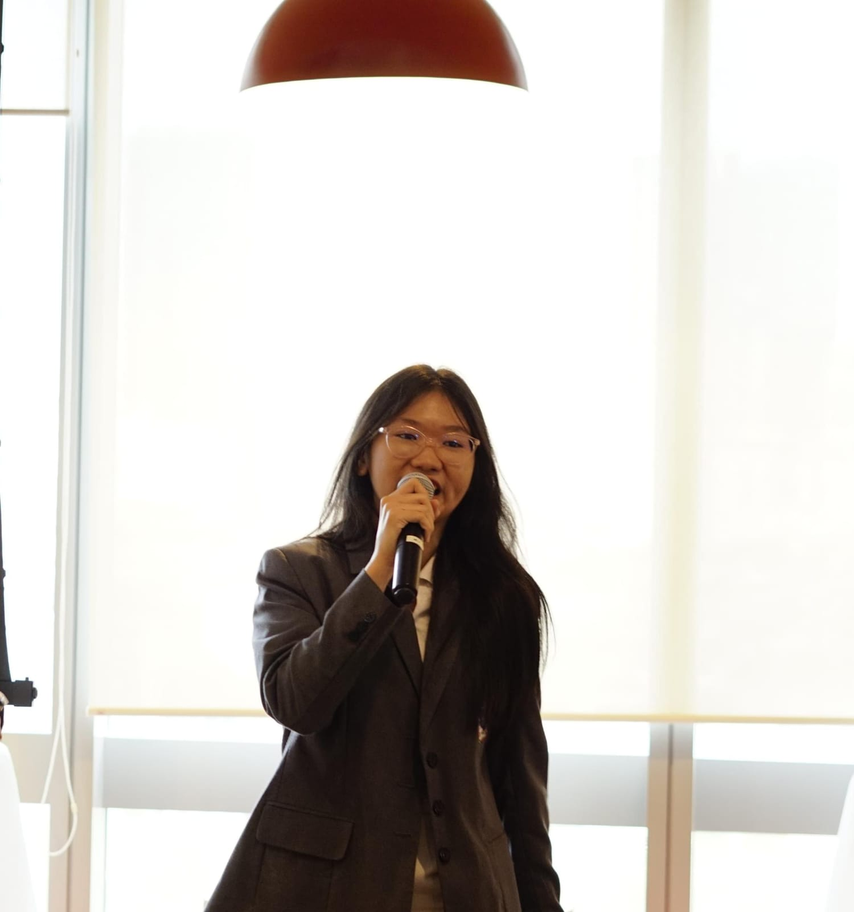

.JPG) Let's explore together!
Let's explore together!
Hi, I'm Elizabeth, a third year Informatics student specializing in cybersecurity. My current interests centers on digital forensics, cryptography, and network security. I focus on understanding systems and tackling technical challenges step by step. I enjoy learning by doing and constantly building practical skills through hands-on experience. Besides my technical expertise, I enjoy interacting with people, public speaking, and taking active roles in various organizations and event committees.
